Unit 3
PLAY
Alongside technical aspects of physical computing there will be some workshops to explore the non-technical aspects. These will look at areas such as privacy and security and inclusive design, and this week's topic is play. As I said in week 1, I have based a lot of the exploration of physical computing around play. Play can be so many things, and it lets you explore interactions and engagement with the audience.
In my work I have only recently come back to play. Previously I worked as an animator in a games company, but over time moved into information graphics.
Around this time last year, I went to an Urban Games workshop run by the Digital Society School in Amsterdam where over 2 days we designed and prototyped a game. This got me interested in games again, and how play could bring people together.
Some of the examples they showed were:
PLAYABLE CITIES
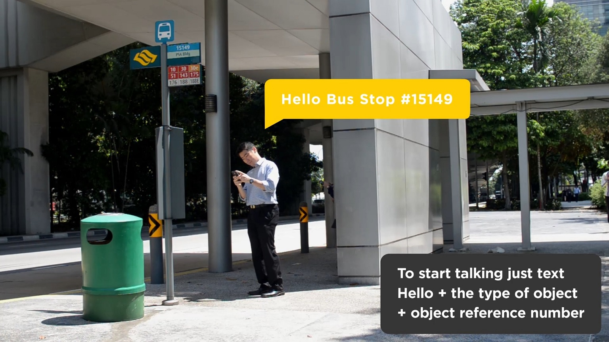
Speakers notes go here.
THE MOVING FOREST
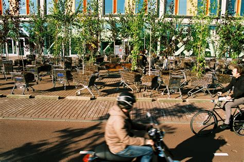
And they don’t need to be digital. For the moving forest installation in Amsterdam, trees were put in shopping trolleys to create a movable forest. People would have to move through the space in new ways as trees blocked their usual path. At the end of the project people were asked to take the trees home. .
INTROBOTS
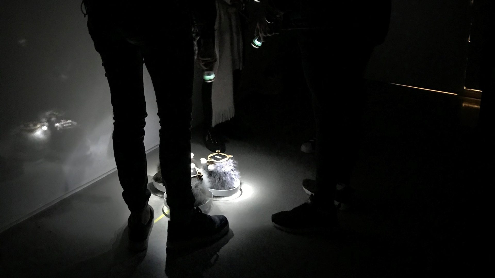
And they don’t need to be digital. For the moving forest installation in Amsterdam, trees were put in shopping trolleys to create a movable forest. People would have to move through the space in new ways as trees blocked their usual path. At the end of the project people were asked to take the trees home.
- play as progress
- play as power
- play as fantasy
- play as self
It 1995, Anthony Pellegrini categorized 4 types of play:
play as progress (for something useful), play as power (associated with competition), play as fantasy (creativity), and play as self (for personal satisfaction). Anthony Pellegrini (1995)
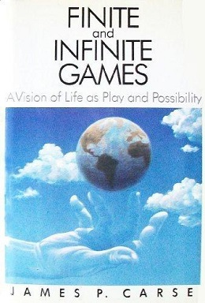
James P. Carse talks about finite and infinite games, A finite game is played for the purpose of winning, an infinite game for the purpose of continuing the play.
Finite players play within strict rules, otherwise they cannot say who has won or who has lost; infinite players play with the rules, which are constantly adjusted in response to changing circumstances.
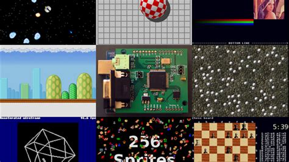
There is the idea that Game designers do not directly design play. They only design the structures and contexts in which play takes place, indirectly shaping the actions of the players.
GAMES
Games have rules, play and culture
RULES are the structure of the game and its logic. PLAY is the actual experience for the player and the interactions with other players. CULTURE is the cultural context the games are played in.
STRUCTURE
Meaningful play emerges in how the person acts within the game, and how the game responds to the actions.
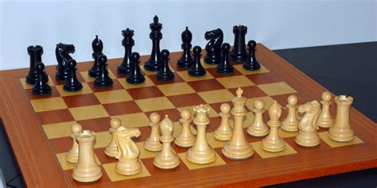
In chess, the board, pieces and rules doesn't make meaningful play, it is how the players interact with the game and each other.
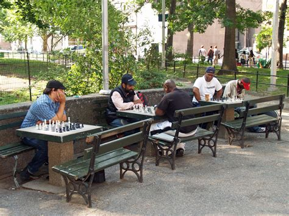
When a player makes a choice within a game, the action that results from the choice has an outcome.
Playing a game means making choices and taking actions.
INTERACTIVITY
There are different ways that people can interact with the play or the game and these can overlap.
- Mode 1: Cognitive interactivity
- Mode 2: Functional interactivity
- Mode 3: Explicit interactivity
- Mode 4: Cultural participation.
Mode 1 is the psychological, emotional and intellectual participation between a person and a system. The imagination needed in play. Mode 2 is the user interface for the game, this includes how buttons react when clicked, response times to inputs or the legibility of text. Mode 3 is the obvious interactions for example following the rules of a board game or using the joystick to maneuver. Mode 4 are the non-designed interactions in which players create their own stories, their own interactions and change the play.
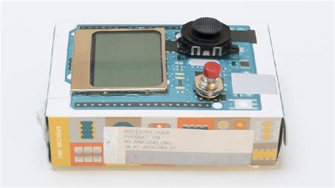
When structuring the interactions, you think about
1. What happened before the player was given the choice?
2. How is the possibility of choice conveyed to the player?
3. How did the player make the choice?
4. What is the result of the choice? How will it affect future choices?
5. How is the result of the choice conveyed to the player?
RULES OF PLAY
The rules of any game exist on three related levels: CON-STITCH-U-TIVE (Constitutive) rules, operational rules, and implicit rules.
CONSTITUTIVE RULES
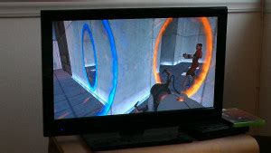
(Constitutive) rules are the abstract, core mathematical rules of a game. They contain the essential game logic, but don’t explicitly indicate how players should enact these rules. For example, before finishing a level the player needs to flick a switch or going through a portal.
OPERATIONAL RULES
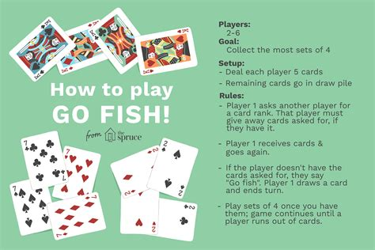
Operational rules are the set "rules of play" that players follow when they are playing a game
IMPLICIT RULES
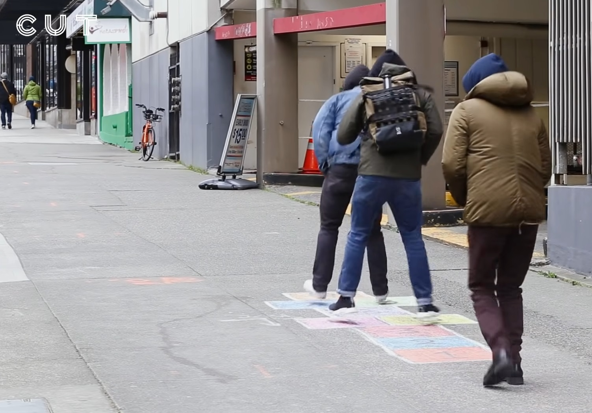
Implicit rules are the "unwritten rules" of etiquette and behavior that usually go unstated when a game is played. Similar implicit rules apply to many different games
PERFECT AND IMPERFECT INFORMATION
In games there is perfect and imperfect information. What information do the other players know, for example in a game like scrabble only the player knows what letters they hold, but all players know what letters are on the main board.
Games of perfect information, such as chess or backgammon tend to be analytically competitive, whereas games of imperfect information, where some of the information is hidden tend to have more uncertainty and inspire distrust among players.
CYBERNETIC SYSTEMS AND GAMES
Cybernetics studies the behavior of self-regulating systems
CYBERNETIC SYSTEMS
- A Sensor
- A Comparator
- An Activatot
A cybernetic systems consists of three elements:
♦ A sensor that measures some aspect of the system or its environment
♦ A comparator that compares this measure to a set value and decides whether or not to take action
♦ An activator that creates a change in the state of the system
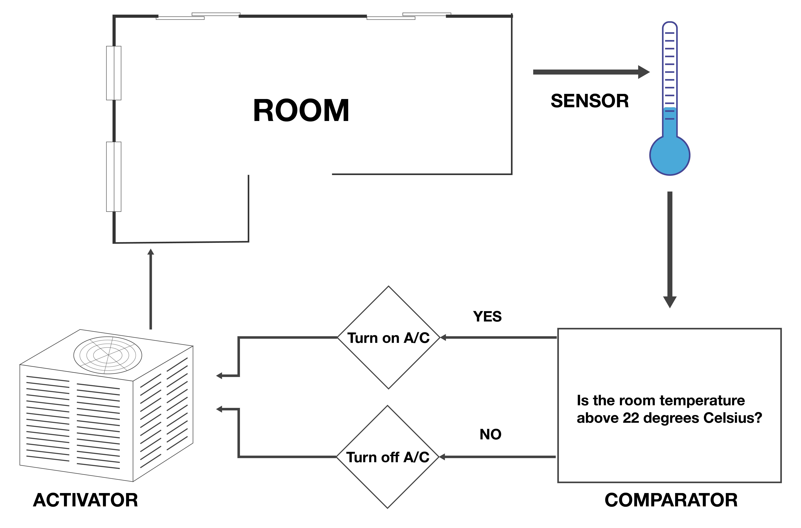
For example, in an air conditioner, the sensor and comparator are in the thermostat, which activates the air conditioner activator to cool down a room when the temperature gets too high.
A negative feedback system is stabilizing and brings a system to a fixed, steady state. For example, when the temperature in an air-conditioned room goes below a certain level the system turns off, so the room doesn’t get too cold The temperature remains within a narrow range.
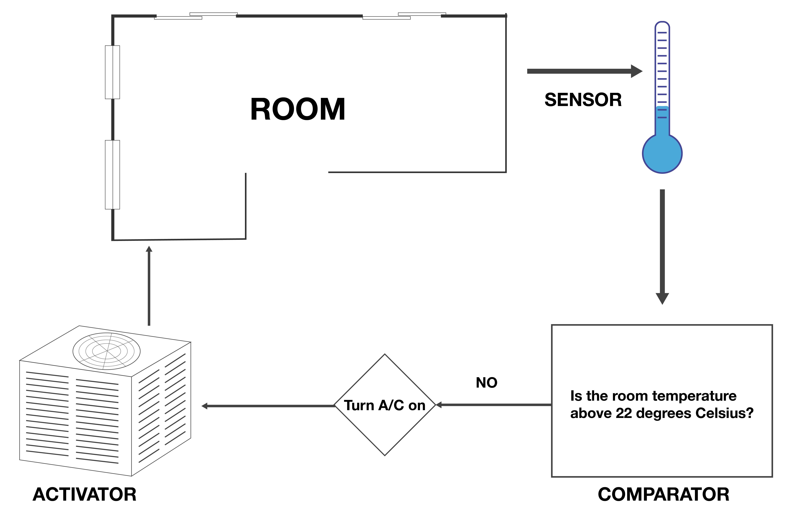
A positive feedback system is cumulative and makes a system unstable. In an air conditioner, The system doesn ‘t turn off and the room becomes colder and colder, moving away from a stable state.
A game can contain many feedback systems that interact with each other within the larger system of
the game.
| Negative feedback stabilizes the game |
Positive feedback destabilizes the game |
| Negative feedback can prolong the game |
Positive feedback can end it |
| Negative feedback magnifies late successes |
Positive feedback magnifies early successes |
Many game feedback systems are negative, reducing the advantage or disadvantage of a player or a
Team.
Negative feedback stabilizes the game.
♦ Positive feedback destabilizes the game.
♦ Negative feedback can prolong the game.
♦ Positive feedback can end it.
♦ Positive feedback magnifies early successes.
♦ Negative feedback magnifies late ones.
SNAKES AND LADDERS
Feedback systems can take control away from the players. Looking at snakes and ladders can explain the negative feedback loop in games. .
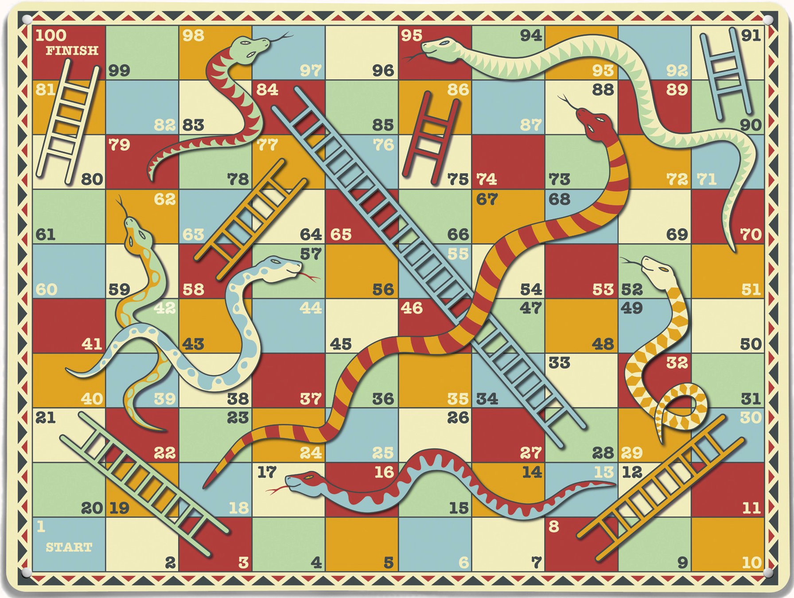
Snakes and Ladders is a board game, where each player throws the dice and the number on the dice is the amount of squares the player can move forward. On the board are snakes and ladders, if the final position of a player in a round is on a square with a snake, the player moves down the board to the other end of the snake. If they land on the ladder, they go up the board to the other end of the ladder.
At the end of the game there is a negative feedback loop, as the player needs the exact amount on the dice for the squares they need to move. This gives other players a chance to catch up with the leader, reducing the difference between the position of the players, making the game longer, and creating a more dramatic finish.
PLAYERS
There will be players of the game. Once you have created your project, you no longer have control of how people will play with it
- Will a player cheat?
- Will players change the rules?
- Will players decide not to play?
Will there be a player who cheats, finds ways to get around the rules?
Will there be players who change the rules to suit their group
Will people join in with the rules or will they decide not to play.
THE USER EXPERIENCE
Which all goes into the user experience
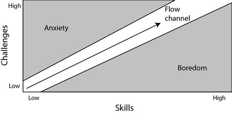
The psychologist Csikszentmihalyi (Me-High Cheek-sent-me-high) named a psychological concept called flow. The balance between being challenged and our ability to meet that challenge. In games the difficulty level should be just right, not too difficult so we can’t manage it, or too easy that we get bored.
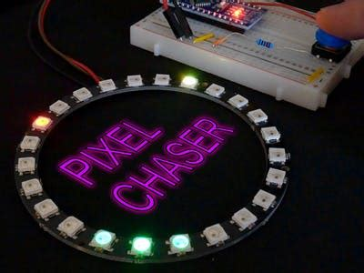
We need to think about how the game is paced, how the person is introduced to what they have to do, and throughout what they learn that leads them to the next level, there is progression. We also need to think about the inputs we give to the user in order to interact, will they know what to do.
URBAN GAMES DESIGN
As I mentioned earlier, it was going to the urban game workshop last year that reignited my interest in games. The group I was in used physical computing, with the BBC Microbit, to create a multiplayer game that could be played anywhere.
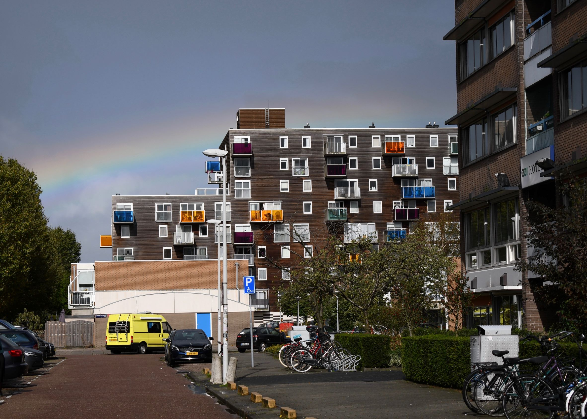
It took us a while to come up with an idea. We spent half a day walking around the neighborhood with a set of props such as sponges, and wooden spoons, until we had the idea of semaphore.
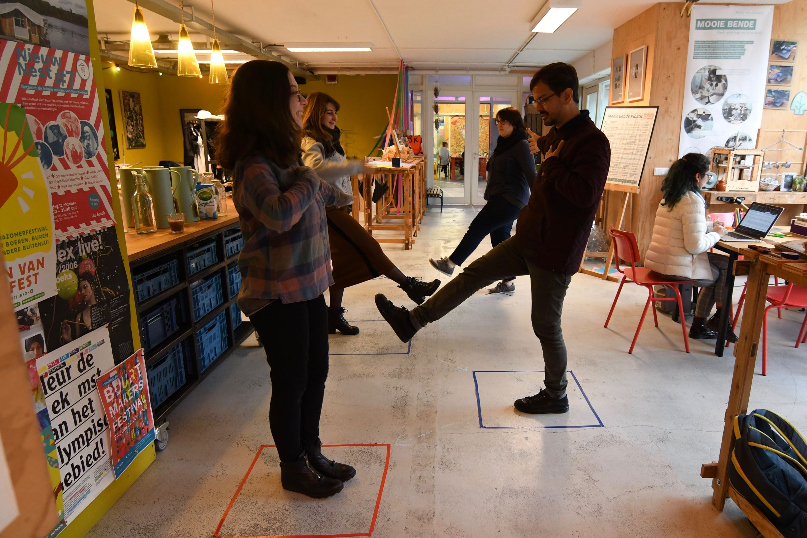
It took us a while to come up with an idea. We spent half a day walking around the neighborhood with a set of props such as sponges, and wooden spoons, until we had the idea of semaphore.
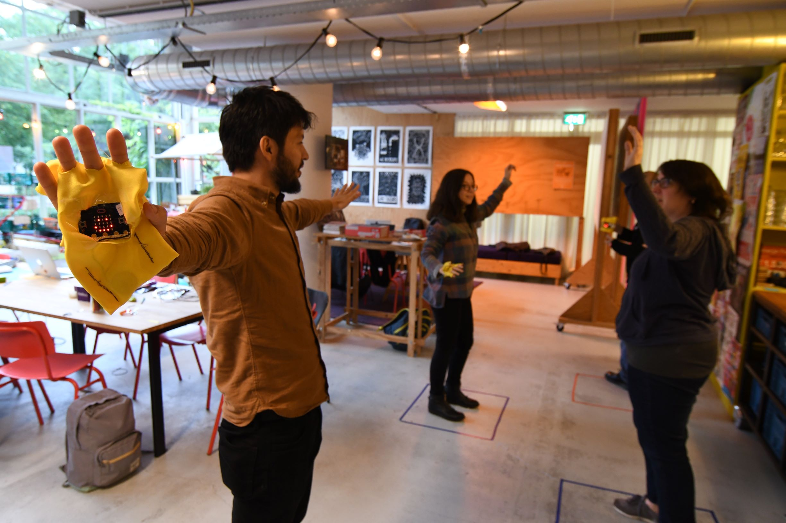
This developed into a game where people stood in two lines opposite each other. The head of one side of the line would make a movement, and the person opposite them would copy it, the person opposite them would copy their movement and so on down the line. We made gloves with the microbit in, which was programed to make a sound and its lights flash when there was hand movement, making music from the group's movement.
I also like the way another team came up with their idea. They went onto the street and draw a line with chalk, they then saw how people reacted to that line and draw in more detail and saw how people reacted to that line.
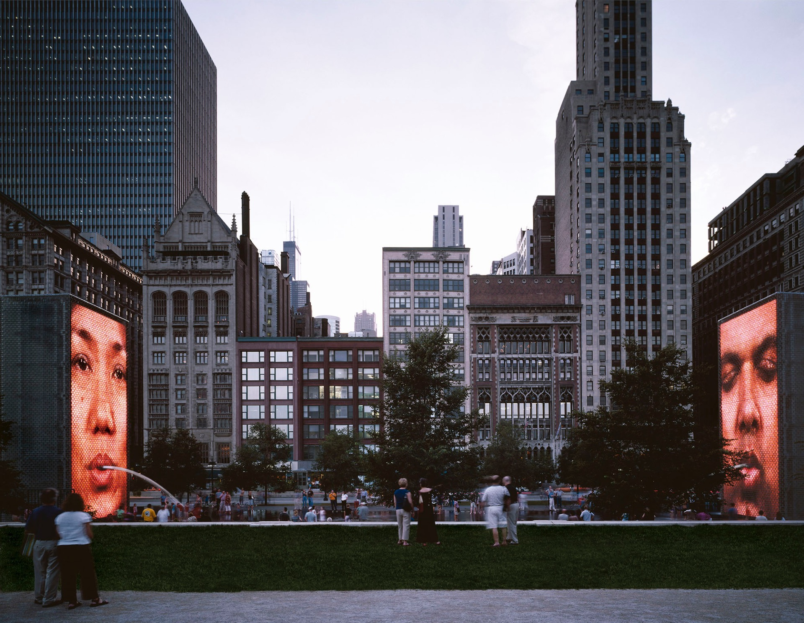
There were three things I came away with from the workshop, that in play there should be playfulness, defamiliarization and artificial agents.
PLAYFULLNESS
playfulness fosters surprise, sense of wonder, the delight of finding something unexpected
DEFAMILIARIZATION
Defamiliarization – look at things in a new way, make strange what you already know
This creates a space of playful possibilities in contexts that would otherwise be mundane
ARTIFICIAL AGENTS
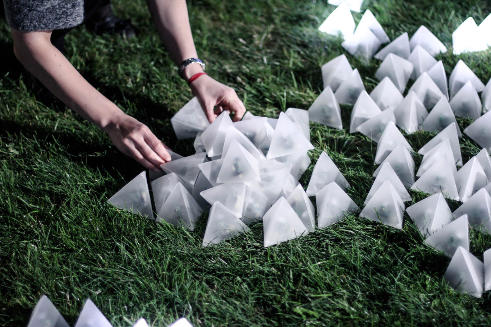
Artificial agents play with the magical feeling of seeing an inanimate object suddenly having a life of its own
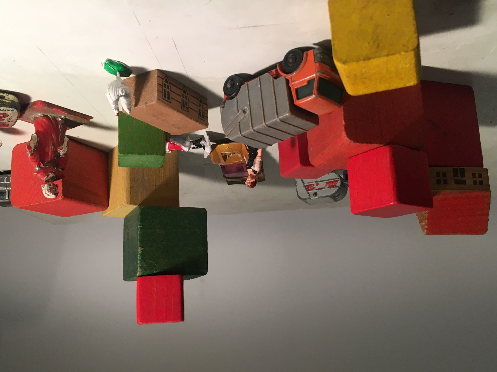
Which also brings me back to this units first weeks presentation Bernie de Koven
We really like to play, whether its toys, games or imagination we like to play, we don’t need physical things to play, but they help.